Делаете ремонт
Поможем выбрать обои, краску и декор под вашу комнату и бюджет. Можно прийти с проектом или фотографиями понравившихся интерьеров.
Подберем материалы под ваш бюджет по фотографии комнаты или готовому дизайн-проекту
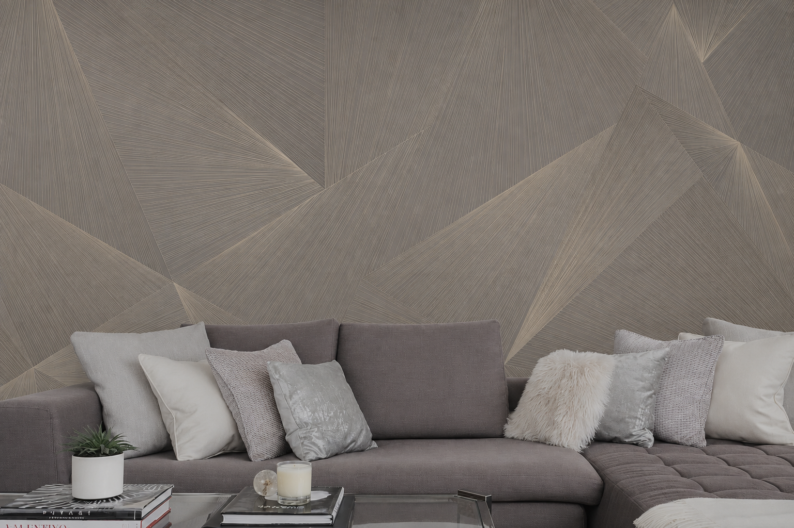
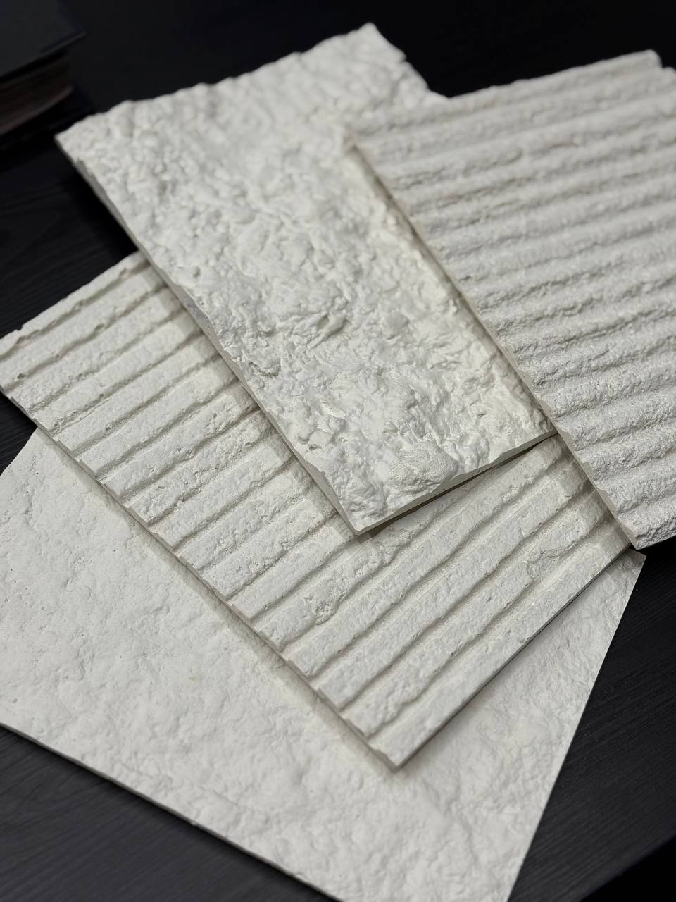
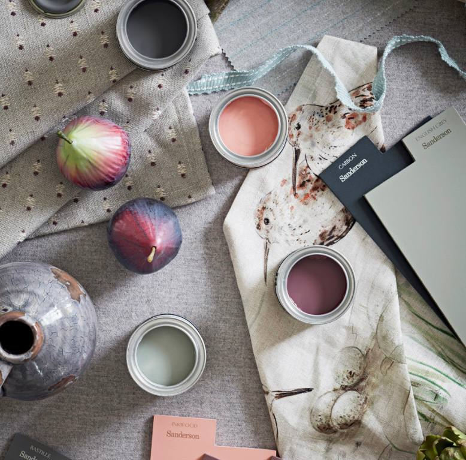

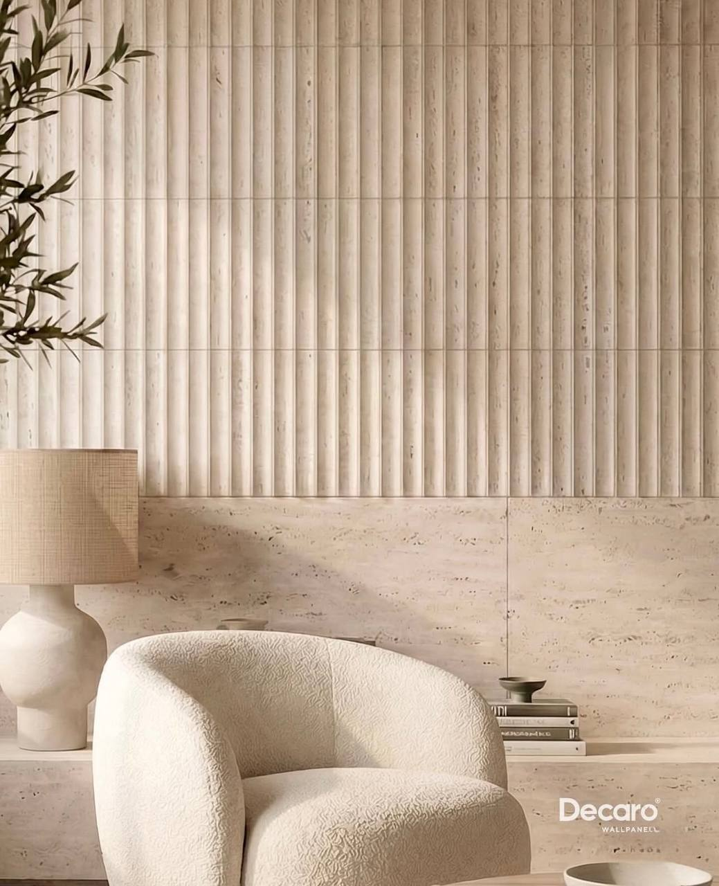
Для отделки стен и отдельных зон
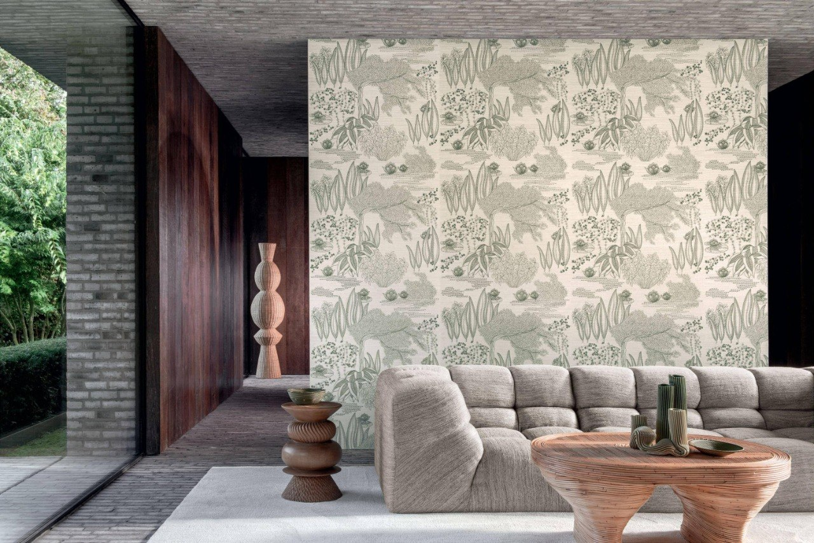
Однотонные и с рисунком
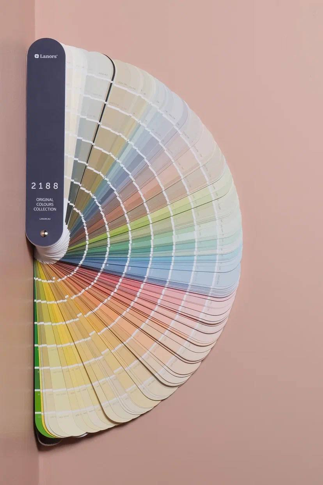
Подбор цвета для вашей комнаты

Молдинги, карнизы и плинтусы
Не знаете, с чего начать? Подберём материалы вместе.
Поможем выбрать обои, краску и декор под вашу комнату и бюджет. Можно прийти с проектом или фотографиями понравившихся интерьеров.
Дизайнерам и комплектаторам поможем подобрать материалы по проекту, обсудить варианты замены, стоимость и сроки поставки.
Обсудить комплектациюПодберём отделку к мебели и полу, которые остаются. Покажите фотографии комнаты и расскажите, что хотите поменять.
Покажите, что уже выбрали. Поможем подобрать остальные материалы по цвету, рисунку и размерам.
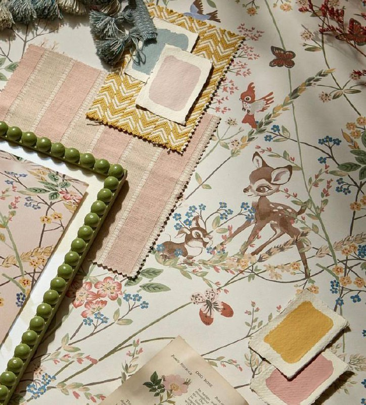
Посмотрите образцы и выберите рисунок для вашей комнаты.
Подберём оттенки к обоям. Перед покраской рекомендуем проверить цвет на стене при вашем освещении.
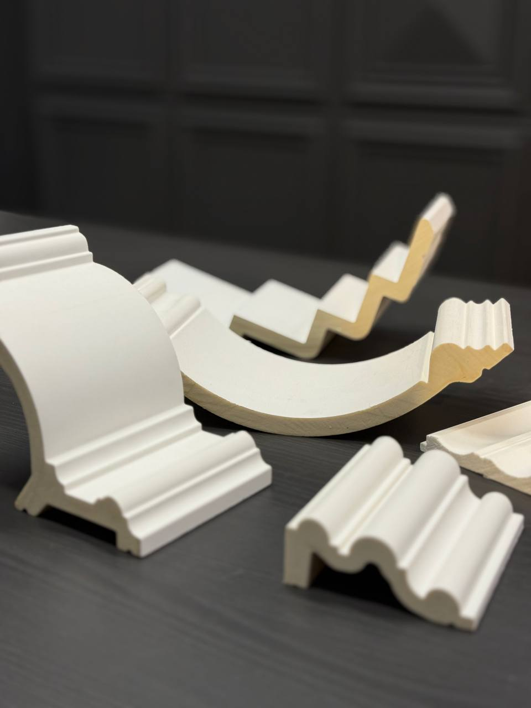
Поможем выбрать форму и размер декора с учётом высоты потолка и отделки стен.
В салоне можно посмотреть обои, выкрасы и декор, приложить образцы друг к другу и выбрать подходящие.
Как добраться в салон ↗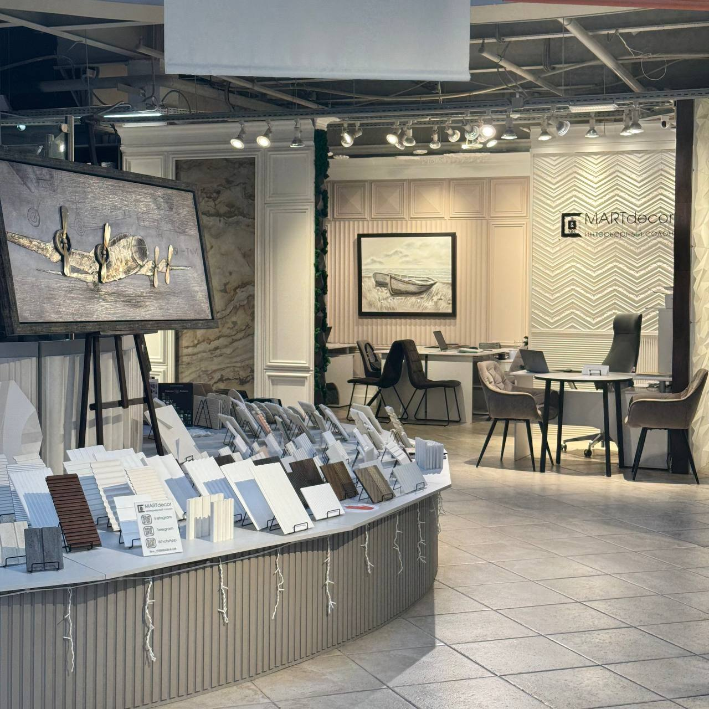
Покажите фото комнаты или проект. Расскажите, что хотите изменить и какой бюджет планируете.
Шаг 1 из 3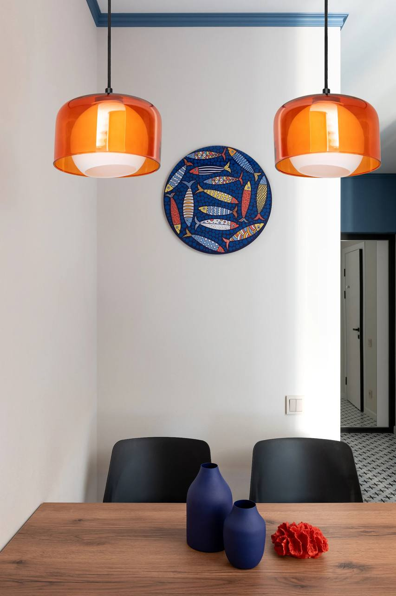
Посмотрите предложенные обои, краску и декор. Поможем сравнить варианты и выбрать подходящие.
Шаг 2 из 3Перед покупкой уточним количество материалов, стоимость и сроки поставки.
Шаг 3 из 3Стоимость и состав услуги подбора согласуйте с менеджером заранее. До покупки проверьте количество материалов, итоговую сумму и сроки поставки.
Образцы лепного декора и 3D-панелей Orac можно взять на примерку. Приложите их к стене, чтобы оценить размер и рельеф в своей комнате.
До примерки уточните доступные образцы, порядок получения, стоимость, залог и срок возврата. Возможность выезда сотрудника и территорию обслуживания нужно согласовать отдельно.
Примеры интерьеров от брендов, представленных в подборке салона.
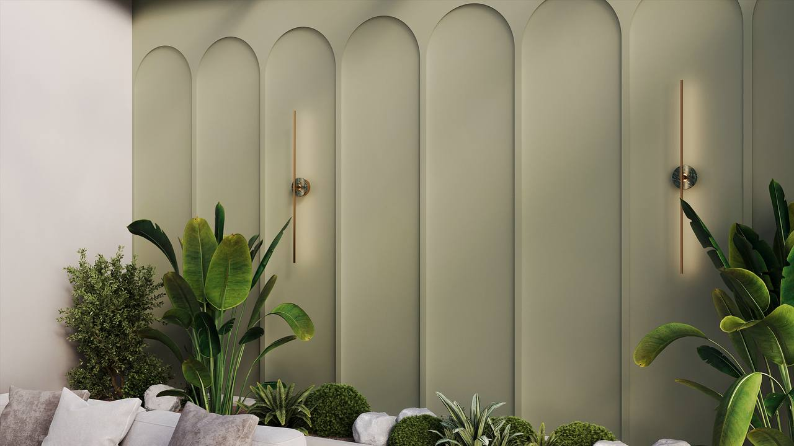
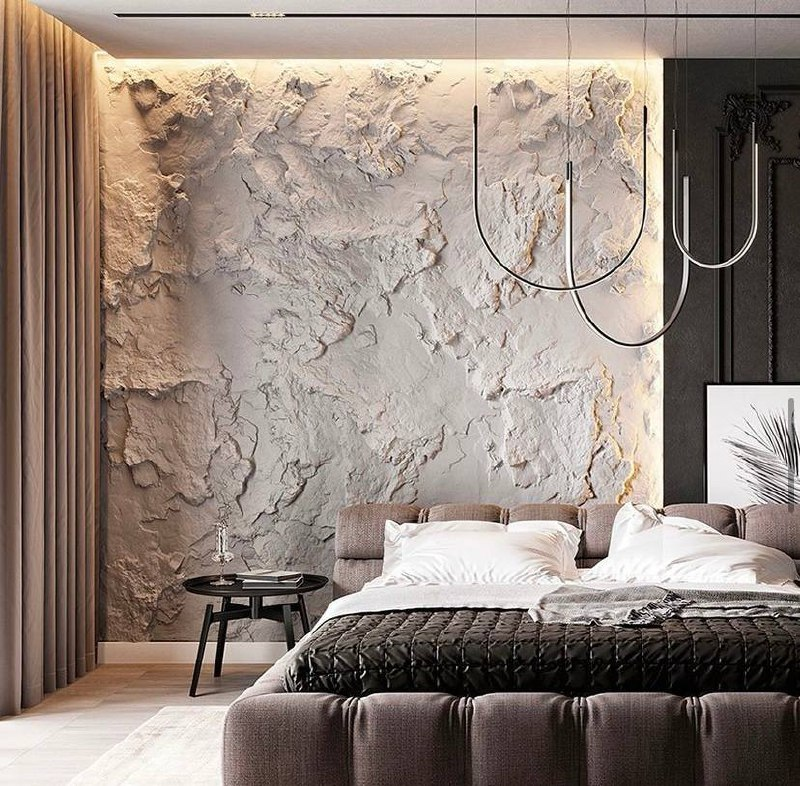
Екатерина А. · 13.09.2024
Отзыв на Яндекс Картах ↗Анатолий Лебедь · 14.08.2024
О покупке гипсовых панелей.
Григорий Сметана · 24.05.2023
Отзыв на Яндекс Картах ↗Дословные фрагменты публичных отзывов. Условия конкретного заказа согласуются отдельно.
Передайте проект или приезжайте с заказчиком: обсудим материалы, сочетания, расчёт и варианты замены. Возможность получить образцы для работы на объекте и условия комплектации уточните у команды.
В салоне также проходят профессиональные встречи. Даты и условия участия уточните у команды.
Да. Возьмите фото комнаты, план или дизайн-проект. Если материалы уже выбраны, покажите их фотографии или образцы.
Да, образцы лепного декора и панелей Orac можно взять на примерку. Перед визитом уточните, какие образцы доступны, стоимость, залог и срок возврата.
Позвоните в салон и назовите модель или коллекцию. Менеджер уточнит цену и наличие выбранного варианта.
Сообщите менеджеру адрес и состав заказа. Уточните стоимость доставки, перевозчика и сроки до оплаты.
До оплаты согласуйте состав заказа, количество, итоговую стоимость, наличие и сроки. Порядок оплаты, доставки и хранения подтвердит менеджер. Условия обмена и возврата уточните до заказа, особенно для колерованных и заказных материалов.
Подготовьте артикул, фото этикетки и номер партии, если он указан. Менеджер проверит возможность дозаказа и совпадение партии.
Сообщите тип помещения, основание и условия эксплуатации. До покупки уточните требования к подготовке поверхности, клею и монтажу конкретного материала.
Ростов-на-Дону
пр. Михаила Нагибина, 30Л
Дизайн-центр WEST, цокольный этаж
Пн–Пт: 10:00–19:00
Сб–Вс: 10:00–17:00
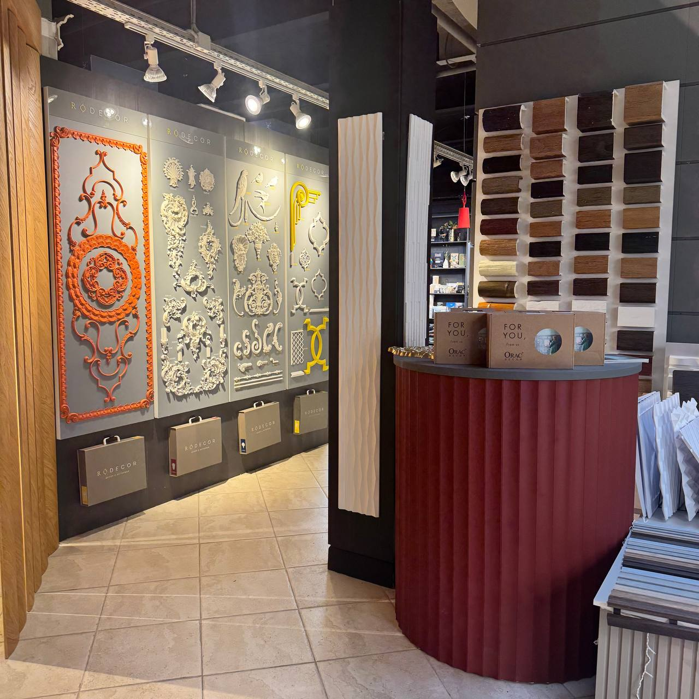
Как выбрать цвет, сочетать обои с краской и примерить декор.